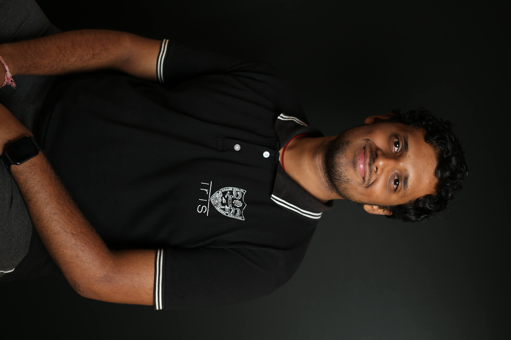

---
# Feel free to add content and custom Front Matter to this file.
# To modify the layout, see https://jekyllrb.com/docs/themes/#overriding-theme-defaults

layout: home
---

<div class="home-grid">
    <div class="centre">
        <p>
            Hello! I am Anirudh Prabhakaran, a final year (senior) undergraduate at the
            National Institute of Technology Karnataka (NITK), Surathkal, India.
            I am interested in <strong>Computer Vision</strong>, <strong>Deep Learning</strong>,
            <strong>Medical Machine Learning</strong> and <strong>Theoretical Machine Learning</strong>.
        </p>
        <p>
            Currently, I am a Research Intern at <a href="https://www.cogai4sci.com/">Cognitive AI for Science (CogAI4Sci)</a>
            lab at NUS. I am working under the guidance of Dr. Dianbo Liu, on using GFlowOut 
            on eye images.
        </p>
    </div>
    
    <div class="centre">
        
    </div>
</div>